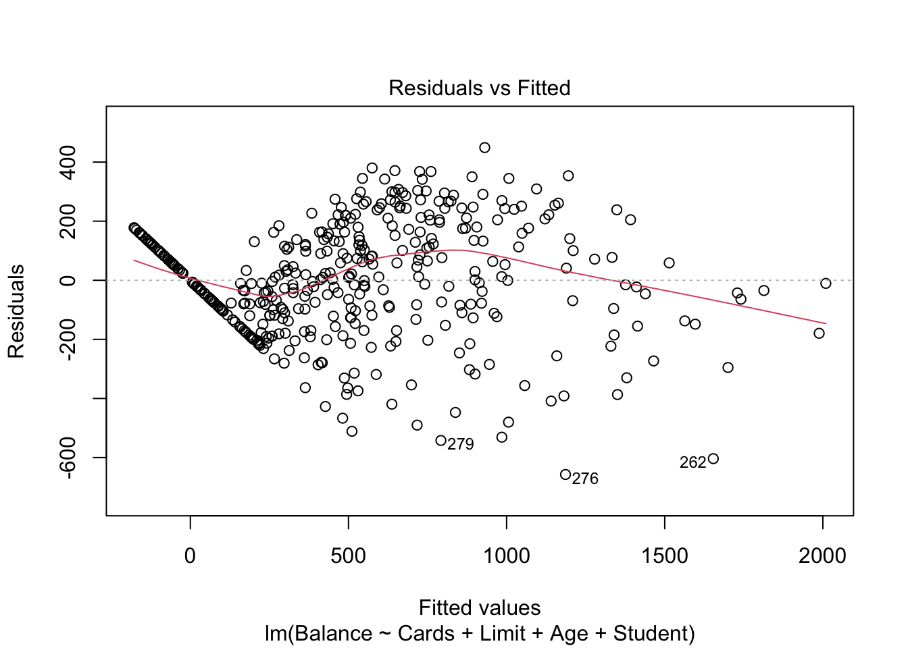

Regression
1 Overview
Regression typically refers to identifying a (linear) relationship between a set of explanatory variables and response variables. If the response variable is categorical, this typically refers to an ANOVA model.
1.1 Correlation
Correlation describes the strength and direction of a straight-line (linear) relationship between pair of variables. The Pearson correlation coefficient is defined as \[r = \frac{cov(X,Y)}{s_X s_Y}\] where \(s_X\) is the standard deviation of X, or equivalently, \[r = \frac{1}{n-1} \sum z_xz_y\] where \(z_x = \frac{x-\bar{x}}{s_x}\). We can think of each \(z_x\) as the number of standard deviations the data is above the mean.
Correlation ranges from -1 to 1, values with a larger magnitude indicate a stronger correlation, and the sign designates the direction. If the correlation is 0 we can conclude the variables are not linearly dependent. However, even if the correlation is small (in magnitude), there may exist a non-linear relationship between them. Correlation is unit free, unit invariant, and sensitive to outliers.
2 Simple Linear Regression
Simple linear regression occurs when there is one independent variable and one dependent variable (typically both continuous).
2.1 Assumptions
Simple linear regression assumes a model of the form: \[y_i = \beta_0 + \beta_1 x_i + \varepsilon_i\]
We also make various assumptions when fitting a linear regression model:
- All errors (\(\varepsilon_i\)’s) are independent
- Mean of \(\varepsilon\) at any fixed x is 0, so average of all \(\varepsilon\) is 0
- At any value of x, the spread of the y’s is the same as any other value of x \(\rightarrow\) Homoscedasticity
- \(Var(\varepsilon_{ij}) = \sigma^2 = MSE\)
- At any fixed x, the distribution of \(\varepsilon\) is normal
We generally assume assumptions 1 and 2 are true, and have methods of verifying assumptions 3 and 4 (explored with examples).
2.2 Fitting the Model
To fit a linear regression model, we want to minimize the sum of squares residuals or sum of squared estimate of errors: \(SSE = \sum_{i=1}^n e_i^2 = \sum\limits_{i=1}^n(y_i-\hat{y}_i)^2\) where \(\hat{y}_i\) are the fitted values. Using calculus, it can be shown the solution to this criteria is:
\[\hat{\beta_1} = \frac{\sum\limits_{i=1}^n(X_i-\bar{X})(Y_i-\bar{Y})}{\sum\limits_{i=1}^n(X_i-\bar{X})^2}, \beta_0 = \bar{Y}-\hat{\beta}_1\bar{X}\]
Alternatively, we can use a linear algebra approach and look for a least squares solution to \(A\bar{x} = \bar{b}\) where \[A = \begin{bmatrix} 1 & x_1\\ 1 & x_2\\ \vdots & \vdots\\ 1 & x_n \end{bmatrix}, x = \begin{bmatrix} \beta_0 \\ \beta_1 \end{bmatrix}, b = \begin{bmatrix} y_1\\ y_2\\ \vdots\\ y_n \end{bmatrix}\].
However, \(\bar{b}\) is not in the column space of \(A\), so we must search for a solution for \(A\bar{x} = \bar{b}_{||} = \bar{b}-\bar{b}_\perp\). Multiplying by the transpose of \(A\) we have: \(A^TA\bar{x} = A^T\bar{b} - A^T\bar{b}_\perp = A^T\bar{b} + 0\). Finally, solving for \(\bar{x}\) we have: \(\bar{x} = (A^TA)^{-1}A^T\bar{b}\).
2.3 Simple Linear Regression: Cars Example
We will use the cars data to predict the stopping distance of a car given it’s speed. Begin by plotting the data and calculating the correlation:
library(ggplot2)
ggplot(cars, aes(speed, dist)) + geom_point()
cor(cars)## speed dist
## speed 1.0000000 0.8068949
## dist 0.8068949 1.0000000The relationship appears linear and the correlation is sufficiently large (0.807), so we proceed with fitting a model.
mod.LinearCar = lm(dist~speed, data=cars)
summary(mod.LinearCar)##
## Call:
## lm(formula = dist ~ speed, data = cars)
##
## Residuals:
## Min 1Q Median 3Q Max
## -29.069 -9.525 -2.272 9.215 43.201
##
## Coefficients:
## Estimate Std. Error t value Pr(>|t|)
## (Intercept) -17.5791 6.7584 -2.601 0.0123 *
## speed 3.9324 0.4155 9.464 1.49e-12 ***
## ---
## Signif. codes: 0 '***' 0.001 '**' 0.01 '*' 0.05 '.' 0.1 ' ' 1
##
## Residual standard error: 15.38 on 48 degrees of freedom
## Multiple R-squared: 0.6511, Adjusted R-squared: 0.6438
## F-statistic: 89.57 on 1 and 48 DF, p-value: 1.49e-12The coefficients, as well as their standard error and importance measure are given. We are also given the Residual standard error = \(\hat{\sigma}\) and Multiple R-squared which in this case (since it’s a simple linear model) is equal to the square of the correlation. The p-value associated with the variables test if we can drop the variable from the model, a large p-value indicates we can drop.
Additionally, we can view the ANOVA table of the model.
anova(mod.LinearCar)## Analysis of Variance Table
##
## Response: dist
## Df Sum Sq Mean Sq F value Pr(>F)
## speed 1 21186 21185.5 89.567 1.49e-12 ***
## Residuals 48 11354 236.5
## ---
## Signif. codes: 0 '***' 0.001 '**' 0.01 '*' 0.05 '.' 0.1 ' ' 1We see the model sum of squares (SSM) = \(\sum\limits_{i=1}^n(\hat{y}_i-\bar{y})^2\) (in this case SSM = 21186). We are also shown SSE = \(\sum\limits_{i=1}^n(y_i-\hat{y})^2\) (in this case SSE = 11354). We could calculate the sum of squares total as SST = SSM + SSE.
2.3.1 Making Predictions
If we wanted to predicted the average stopping distance for a car with speed = 15, we can construct a confidence interval with:
predict(mod.LinearCar, data.frame(speed=15), se.fit=T, interval='confidence',level=0.95)$fit## fit lwr upr
## 1 41.40704 37.02115 45.79292However, we could also predict the stopping distance for a particular car with speed = 15 by constructing a prediction interval:
predict(mod.LinearCar, data.frame(speed=15), se.fit=T, interval='prediction',level=0.95)$fit## fit lwr upr
## 1 41.40704 10.17482 72.63925The estimates in both cases are the same, however the confidence interval only considers variation from repeated experiments while a prediction interval considers this variance and the variation of an individual. For either case, the prediction will be more reliable near the center of the data.
Adding Line to Plot
We can easily add a linear model to our plot in the ggplot2 package. This also defaults to drawing a 95% confidence interval.
ggplot(cars, aes(speed, dist)) + geom_point() + geom_smooth(method='lm')
2.3.2 Checking Model Assumptions
Homoscedasticity
We assumed the spread of y’s is the same at any value of x. To check this,
plot(fitted.values(mod.LinearCar), residuals(mod.LinearCar), pch=16, xlab='Predicted Value', ylab='Residual')
abline(h=0, lty=2)
The residuals should be close to 0 and not have any pattern. If a pattern does exist (e.g. a funnel/triangle shape), we have evidence of non-homoscedasticity which could potentially be fixed by a data transformation.
Normality of Residuals
We also assumed our errors were normally distributed. To check this we will construct a QQ-plot:
qqnorm(residuals(mod.LinearCar), pch=16)
qqline(residuals(mod.LinearCar), col = "red", lwd = 2)
In this plot, Sample Quantiles refer to the actual value of the residuals, while Theoretical Quantiles are the z-scores of the residuals. If the residuals are normally distributed, the points should fall on/close to the reference line.
3 Multiple Linear Regression
Multiple linear regression is an extension of simple linear regression when there are several independent variables or functions of independent variables. For example, we could have two independent variables (\(y_i = \beta_0 + \beta_1 x_{i1} + \beta_2 x_{i2} + \varepsilon_i\)), a quadratic term (\(y_i = \beta_0 + \beta_1 x_{i1} + \beta_2 x_{i1}^2 + \varepsilon_i\)), or including an interaction term (\(y_i = \beta_0 + \beta_1 x_{i1} + \beta_2 x_{i2} + \beta_3 x_{i1}x_{i2} + \varepsilon_i\)). There can be non-linearity in x as long as the coefficients (\(\beta_i\)) maintain a linear relationship.
3.1 Multiple Linear Regression: Credit Example
We explore various models to predict credit card balance. This example was inspired by Springer’s book: An Introduction to Statistical Learning
We start with a model using all the available variables (except for ID). Note categorical variables are formatted as factors and are automatically converted to indicator/dummy variables.
library(ISLR)
head(Credit)## ID Income Limit Rating Cards Age Education Gender Student Married Ethnicity Balance
## 1 1 14.891 3606 283 2 34 11 Male No Yes Caucasian 333
## 2 2 106.025 6645 483 3 82 15 Female Yes Yes Asian 903
## 3 3 104.593 7075 514 4 71 11 Male No No Asian 580
## 4 4 148.924 9504 681 3 36 11 Female No No Asian 964
## 5 5 55.882 4897 357 2 68 16 Male No Yes Caucasian 331
## 6 6 80.180 8047 569 4 77 10 Male No No Caucasian 1151mod.Full = lm(Balance ~ Cards + Limit + Rating + Age + Gender + Student + Income + Education + Married + Ethnicity, data=Credit)
summary(mod.Full)##
## Call:
## lm(formula = Balance ~ Cards + Limit + Rating + Age + Gender +
## Student + Income + Education + Married + Ethnicity, data = Credit)
##
## Residuals:
## Min 1Q Median 3Q Max
## -161.64 -77.70 -13.49 53.98 318.20
##
## Coefficients:
## Estimate Std. Error t value Pr(>|t|)
## (Intercept) -479.20787 35.77394 -13.395 < 2e-16 ***
## Cards 17.72448 4.34103 4.083 5.40e-05 ***
## Limit 0.19091 0.03278 5.824 1.21e-08 ***
## Rating 1.13653 0.49089 2.315 0.0211 *
## Age -0.61391 0.29399 -2.088 0.0374 *
## GenderFemale -10.65325 9.91400 -1.075 0.2832
## StudentYes 425.74736 16.72258 25.459 < 2e-16 ***
## Income -7.80310 0.23423 -33.314 < 2e-16 ***
## Education -1.09886 1.59795 -0.688 0.4921
## MarriedYes -8.53390 10.36287 -0.824 0.4107
## EthnicityAsian 16.80418 14.11906 1.190 0.2347
## EthnicityCaucasian 10.10703 12.20992 0.828 0.4083
## ---
## Signif. codes: 0 '***' 0.001 '**' 0.01 '*' 0.05 '.' 0.1 ' ' 1
##
## Residual standard error: 98.79 on 388 degrees of freedom
## Multiple R-squared: 0.9551, Adjusted R-squared: 0.9538
## F-statistic: 750.3 on 11 and 388 DF, p-value: < 2.2e-16From our output, we see Gender, Education, Married, Ethnicity are not significant, so we remove them from the model:
mod.Less = lm(Balance ~ Cards + Limit + Rating + Age + Student + Income, data=Credit)
summary(mod.Less)##
## Call:
## lm(formula = Balance ~ Cards + Limit + Rating + Age + Student +
## Income, data = Credit)
##
## Residuals:
## Min 1Q Median 3Q Max
## -170.00 -77.85 -11.84 56.87 313.52
##
## Coefficients:
## Estimate Std. Error t value Pr(>|t|)
## (Intercept) -493.73419 24.82476 -19.889 < 2e-16 ***
## Cards 18.21190 4.31865 4.217 3.08e-05 ***
## Limit 0.19369 0.03238 5.981 4.98e-09 ***
## Rating 1.09119 0.48480 2.251 0.0250 *
## Age -0.62406 0.29182 -2.139 0.0331 *
## StudentYes 425.60994 16.50956 25.780 < 2e-16 ***
## Income -7.79508 0.23342 -33.395 < 2e-16 ***
## ---
## Signif. codes: 0 '***' 0.001 '**' 0.01 '*' 0.05 '.' 0.1 ' ' 1
##
## Residual standard error: 98.61 on 393 degrees of freedom
## Multiple R-squared: 0.9547, Adjusted R-squared: 0.954
## F-statistic: 1380 on 6 and 393 DF, p-value: < 2.2e-16Removing these variables results in a simplier model without sacrificing performance (\(R^2\) is similar).
3.1.1 Consider Multicollinearity
It is important our variables are not highly correlated with each other so that we have a design matrix of full rank and a unique solution to our minimization problem. To check this, we can compute the variance inflation factor for our variables, defined as \[VIF(X_m) = \frac{1}{1-R^2_m}\] where \(R^2_m\) is the coefficient of determinationo when \(X_m\) is regressed on all of the other predictors. We want \(VIF(X_m)\) to be close to 1, and a general rule is if it is larger than 5 or 10 there is a problem of multicollinearity.
For our simpler model, we calculate the VIF for each variable:
library(car)
vif(mod.Less)## Cards Limit Rating Age Student Income
## 1.439007 229.238479 230.869514 1.039696 1.009064 2.776906The VIF for Limit and Rating is extremely high, indicating we should not include both of the variables in the model. We can calculate the correlation of these two variables and see it is close to 1.
cor(Credit$Limit, Credit$Rating)## [1] 0.9968797mod.LessNoRating = lm(Balance ~ Cards + Limit + Age + Student + Income, data=Credit)
summary(mod.LessNoRating)##
## Call:
## lm(formula = Balance ~ Cards + Limit + Age + Student + Income,
## data = Credit)
##
## Residuals:
## Min 1Q Median 3Q Max
## -187.05 -79.57 -12.59 56.06 322.56
##
## Coefficients:
## Estimate Std. Error t value Pr(>|t|)
## (Intercept) -4.673e+02 2.199e+01 -21.250 < 2e-16 ***
## Cards 2.355e+01 3.628e+00 6.492 2.55e-10 ***
## Limit 2.661e-01 3.535e-03 75.296 < 2e-16 ***
## Age -6.220e-01 2.933e-01 -2.120 0.0346 *
## StudentYes 4.284e+02 1.655e+01 25.886 < 2e-16 ***
## Income -7.760e+00 2.341e-01 -33.149 < 2e-16 ***
## ---
## Signif. codes: 0 '***' 0.001 '**' 0.01 '*' 0.05 '.' 0.1 ' ' 1
##
## Residual standard error: 99.12 on 394 degrees of freedom
## Multiple R-squared: 0.9541, Adjusted R-squared: 0.9535
## F-statistic: 1638 on 5 and 394 DF, p-value: < 2.2e-163.1.2 Checking Model Assumptions
Just like with the simple linear example, we need to verify our assumptions. We can plot our model to look for evidence of heteroscedasticity and non-normality:
plot(mod.LessNoRating, which=1)mod.LimitIncome = lm(Balance ~ Limit + Income, data=Credit)
plot(mod.LimitIncome, which=1)There are some concerns with our residuals which seem to be caused when both Limit and Income are included. The U-shape of the residuals indicate there may be something wrong with our model structure, and perhaps a quadratic term should be added. However, this U-shape only exists wehn both Limit and Income are included. If we remove one of these (removing Income resulted in a smaller drop in \(R^2\)), the concerns of heteroscedasticity are reduced.
mod.LessNoIncome = lm(Balance ~ Cards + Limit + Age + Student, data=Credit)
summary(mod.LessNoIncome)##
## Call:
## lm(formula = Balance ~ Cards + Limit + Age + Student, data = Credit)
##
## Residuals:
## Min 1Q Median 3Q Max
## -657.27 -118.27 -2.56 137.66 449.07
##
## Coefficients:
## Estimate Std. Error t value Pr(>|t|)
## (Intercept) -3.074e+02 4.171e+01 -7.369 1.01e-12 ***
## Cards 2.950e+01 7.044e+00 4.188 3.48e-05 ***
## Limit 1.734e-01 4.201e-03 41.282 < 2e-16 ***
## Age -2.183e+00 5.628e-01 -3.878 0.000123 ***
## StudentYes 4.043e+02 3.214e+01 12.578 < 2e-16 ***
## ---
## Signif. codes: 0 '***' 0.001 '**' 0.01 '*' 0.05 '.' 0.1 ' ' 1
##
## Residual standard error: 192.7 on 395 degrees of freedom
## Multiple R-squared: 0.8261, Adjusted R-squared: 0.8243
## F-statistic: 469.1 on 4 and 395 DF, p-value: < 2.2e-16plot(mod.LessNoIncome, which=1)
We can also check our residuals are normally distributed:
plot(mod.LessNoIncome, which=2)3.2 Adding an Interaction: Cars Example
So far we have assumed the effect of one predictor variable is independent of another, so all of our predictor variables are additive. However, it’s possible the variables are not independent and there is instead an interaction effect.
Using the mtcars data set, we try to predict miles per gallon (mpg) using horsepower (hp) and engine type (vs: v-shaped/straight). Without an interaction effect, our model produces two parallel lines, depending on the value of vs.
mod.NoInt = lm(mpg~hp+vs, mtcars)
mtcarsNoInt = cbind(mtcars, mpg.Fit = predict(mod.NoInt))
ggplot(mtcarsNoInt, aes(x = hp, y = mpg, colour = factor(vs))) + geom_point() + geom_line(aes(y=mpg.Fit))However, it is likely hp has a different effect on mpg depending on the engine type (vp). We add the interaction term to the model and see the lines are no longer parallel.
mod.Int = lm(mpg~hp+vs+hp*vs, mtcars)
mtcarsInt = cbind(mtcars, mpg.Fit = predict(mod.Int))
ggplot(mtcarsInt, aes(x = hp, y = mpg, colour = factor(vs))) + geom_point() + geom_line(aes(y=mpg.Fit))
We can also examine the coefficients of our models:
summary(mod.NoInt)##
## Call:
## lm(formula = mpg ~ hp + vs, data = mtcars)
##
## Residuals:
## Min 1Q Median 3Q Max
## -5.7131 -2.3336 -0.1332 1.9055 7.9055
##
## Coefficients:
## Estimate Std. Error t value Pr(>|t|)
## (Intercept) 26.96300 2.89069 9.328 3.13e-10 ***
## hp -0.05453 0.01448 -3.766 0.000752 ***
## vs 2.57622 1.96966 1.308 0.201163
## ---
## Signif. codes: 0 '***' 0.001 '**' 0.01 '*' 0.05 '.' 0.1 ' ' 1
##
## Residual standard error: 3.818 on 29 degrees of freedom
## Multiple R-squared: 0.6246, Adjusted R-squared: 0.5987
## F-statistic: 24.12 on 2 and 29 DF, p-value: 6.768e-07summary(mod.Int)##
## Call:
## lm(formula = mpg ~ hp + vs + hp * vs, data = mtcars)
##
## Residuals:
## Min 1Q Median 3Q Max
## -5.5821 -1.7710 -0.3612 1.5969 9.2646
##
## Coefficients:
## Estimate Std. Error t value Pr(>|t|)
## (Intercept) 24.49637 2.73893 8.944 1.07e-09 ***
## hp -0.04153 0.01379 -3.011 0.00547 **
## vs 14.50418 4.58160 3.166 0.00371 **
## hp:vs -0.11657 0.04130 -2.822 0.00868 **
## ---
## Signif. codes: 0 '***' 0.001 '**' 0.01 '*' 0.05 '.' 0.1 ' ' 1
##
## Residual standard error: 3.428 on 28 degrees of freedom
## Multiple R-squared: 0.7077, Adjusted R-squared: 0.6764
## F-statistic: 22.6 on 3 and 28 DF, p-value: 1.227e-07The model with interaction has a larger \(R^2\) than the model without. It is interested that vs is not significant in the first model but becomes significant when the interaction term is added.
The hierarchical priniciple tells us that within a model if the main effects variable (e.g. vs) is not significant but the interaction variable is (e.g. hp:vs), then we should still include the main effects variable. In our example, all the main effects variables were shown to be significant, but if one hadn’t and the interaction was significant, we should still include them.
A non-rigorous way to tell if an interaction variable is needed is to plot the data and visually fit a line by group. If the lines are parallel, no interaction is needed, but if they intersect (in this case), then an interaction should be considered.
3.3 Some Other Regression Topics
3.3.1 Model Selection
We have been using \(R^2\) to determine the percent of variation in the data is described by the model. We are also given the residual standard error, or root mean squared error (RMSE), in the model summary output.
Other model metrics
- Mallow’s \(C_p\): If this is small the model is competative to the full model and preserves degrees of freedom
- Adjusted \(R^2\): Penalizes for too many predictors that don’t reduce unexplained variation
- \(PRESS_p\): Prediction Sum of Squares, if small then predicts point well
- BIC/AIC: Small if model is good fit and simple
Best subsets can be used to determine the best k models for a chosen number of variables.
Stepwise algorithms add/remove independent variables one at a time before converging to a best model. They can be either forward selection, backward elimination, or both. The algorithm may converge to different best models depending on the direction and initial model.
3.3.2 Leverage and Influence
- Leverage: Distance of an observation from the mean of the explanatory variables. The inclusion/exclusion of this observation has a large change on the fitted line
- Hat values - indicate potential for leverage
- Press residuals
- Studentized residuals
plot(mod.LessNoIncome, which=3)
- Influence: Ability to change metrics of lines fit. For example, \(R^2 = 1-\frac{SSE}{SST}\), so adding a data point increases SST while it may keep SSE the same, artificially inflating \(R^2\).
- DFFITS - Difference in fits
- DfBetas - How much coefficients change when ith value is deleted
- Cook’s Distance - measures overall influence
plot(mod.LessNoIncome, which=4)
4 Categorical Response (ANOVA model)
4.1 Confidence Intervals
4.2 ANOVA: ____ Example
Levenes test and normality test # Other Related Topics
- Kruskal-Wallis Test
- Dunn Test